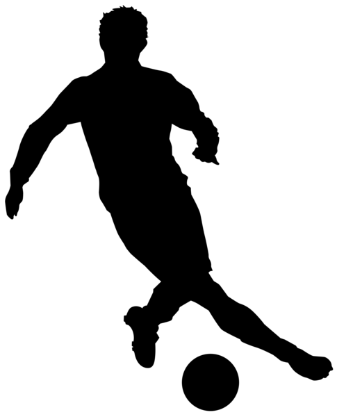
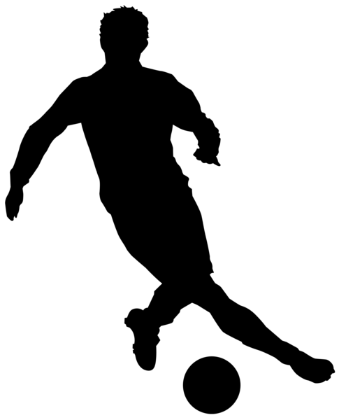

Historia klubu
Spis treści
POCZĄTKI
Klub piłkarski AC Milan utworzony został 16 grudnia 1899 roku, tuż przed końcem XIX wieku w Fiaschetteria Toscana na ulicy Berchet (pierwsza kwatera główna, która już nie istnieje). Na pomysł stworzenia klubu wpadli trzej Anglicy: pracownik w fabryce koronkowej (Kilpin), pracownik w agencji podróżniczej (Allison), oraz szewc (Davies). Po pół litra piwa i szklaneczce dobrego wina ("Chianti") trzej przyjaciele przedstawili swój pomysł dwojgu businessmanom - Edwardsowi Nathanowi i Barnettowi. Chcieli oni założyć klub krykietowy i piłkarski o nazwie Milan. Edwards, mianowany prezydent, nie był znany ze swojej hojności i zaakceptował pomysł, gdyż Davies (szewc), zaoferował siłę robocza i skórę do robienia butów piłkarskich. Wieści rozeszły się po Mediolanie jak błyskawica, a pomysł zyskał ogromne poparcie wśród ludzi. Ci którzy stali się członkami zarządu, zazwyczaj byli ważnymi osobistościami w mediolańskiej burżuazji, którzy również stali się pełnymi sukcesu businessman'ami: Valerio, Dubini, Angeloni, Lamperio i przede wszystkim Piero Pirelli, przyszły prezydent. Celem klubu było rozprzestrzenianie piłki nożnej i gry w krykieta, tak bardzo jak tylko jest to możliwe. Są pewne wątpliwości, jeżeli chodzi o prawdziwą datę, ale najbardziej prawdopodobna wydaje się wersja Marquess'a Porro Lambertenghi'ego, pierwszego historyka Milanu. Nowy klub zarejestrowany został przez FIF (Italian Football Federatin) i dołączył do sceny włoskiej piłki nożnej - drużyna która mogła sobie wyrzeźbić reputacje najbardziej groźnej w lidze. Milan chciał wziąć udział w pierwszych narodowych mistrzostwach i po tym jak znaleźli kwaterę główna, musieli znaleźć miejsce na boisko, na którym mogli by rozgrywać swoje mecze. Członkowie klubu znaleźli kawałek otwartej przestrzeni po stronie dzisiejszej stacji kolejowej - Trotter. Na oficjalne otwarcie obiektu zaproszony został inny mediolański klub na spotkanie towarzyskie (Mediolanium). Był to 11 marzec 1900 roku. Milan grał w białych spodenkach i w czerwono-czarnych pasiastych koszulkach. Ostateczny wynik był zachwycający 3:0 dla Milanu. Pierwszymi zawodnikami, grającymi dla "Diabłów" (tak nazywano Milan) byli: Hoode, Cignaghi, Toretta, Lees, Kilpin, Valerio, Dubini, Davies, Neville, Allison, Formenti. 15 kwietnia Milan podjął Turyn i w pierwszym meczu w mistrzostwach zostali zgniecieni przez przeciwnika 3:0. Jednak tydzień później odegrali się i pokonali w "Medalu króla" (King's Medal) Juventus 2:0 (Gole strzelił Kilpin i Allison). Herbert Kilpin był zarówno założycielem klubu jak i jego kapitanem. Milan również był pierwszym zespołem, który użył słupków bramkowych. Nowość ukazana została na boisku na Fratelli Bronzetti. Po wygraniu swoich trzech pierwszych tytułów w roku 1901, 1906 i 1907 nastąpił rozłam. Grupa członków klubu nie zgadzała się z zarządem, opuściła drużynę i stworzyła nowy klub Inter Milan.
SAN SIRO
Przez kolejne lata Milan próbował nawiązać do sukcesów z początku wieku ale każdy sezon nie spełniał oczekiwań piłkarzy, kibiców i działaczy. Rozgrywki wciąż ulegały zmianom. W końcu regionalne ligi zjednoczyły się i powstała Serie A. Jednak także w tych rozgrywkach Rossoneri nie potrafili nic osiągnięć. Drużyna zdążyła już przenieść się na San Siro - dar od wieloletniego prezydenta Piero Pirelliego dla swego ukochanego miasta. Lata czterdzieste zaczęły się od przejęcia posady prezydenta klubu przez Umberto Trabattoniego. To był początek nowych sukcesów. Po wznowieniu rozgrywek, po wojnie Milan zaczął zajmować coraz wyższe miejsca w tabeli Serie A.
NOWA NADZIEJA: SILVIO BERLUSCONI
W sezonie 1978/1979 do drużyny wchodzi Franco Baresi, który spędzi tu następne 19 lat, stając się w międzyczasie jednym z najlepszych obrońców świata. Zresztą jego debiutancki sezon zakończył się kolejnym zwycięstwem Milanu w Serie A. Rywalizująca z Milanem - Perugia, która nie przegrała żadnego meczu musiała uznać wyższość Rossonerich. Rok 1980 włoska piłka zapamięta ze względu na aferę Totonero. Udział w niej prezesa Milanu - Felice Colombo kosztował klub degradację do Serie B. Milan wrócił do elity ale nie zdołał się utrzymać. Kolejny powrót już był bardziej udany. Zespół się staczał, Baresi nawet w drugiej lidze nie opuścił swojego ukochanego klubu. W tym okresie w 1985 roku pojawia się nowa wielka gwiazda San Siro - Paolo Maldini. Rok później Milan z długów ratuje znany włoski przedsiębiorca Silvio Berlusconi.
NAJLEPSZY KLUB ŚWIATA
Był 20 marca 1986 roku. Prezydentem Milanu został przedsiębiorca telewizyjny, właściciel firmy Fininvest, cieszący się opinią najbogatszego człowieka w Italii - Silvio Berlusconi, urodzony 29 września 1936 roku w Mediolanie, zamierzał przywrócić Milanowi utraconą pozycje zarówno w kraju, jak i na arenie narodowej. Początkowo do realizacji tych ambitnych celów wyznaczył legendę Nilsa Liedholma. Jednak efekty jego pracy - zaledwie piąte miejsce w Serie A - nie zadowoliły prezesa. Latem 1987 roku podjął on zaskakującą i ryzykowną decyzję. Otóż na następcę Szweda wyznaczył Arrigo Sacchiego. Był on osobą niemal kompletnie nieznaną we Włoszech. Nigdy zawodowo nie uprawiał futbolu, a jego kariera trenerska nie przyniosła mu splendoru. Pracował z drużynami młodzieżowymi Ceseny i Fiorentiny. Za największe osiągnięcie można było uznać awans z Parmą do Serie B. W 1986 roku Parma, prowadzona prze Sacchiego, pokonała w Pucharze Włoch - Milan, na Berlusconim wywarło to tak duże wrażenie, że ten mianował Sacchiego trenerem Milanu. W jego drużynie występowali Giovanni Galli, Paolo Maldini, Mauro Tassotti, Franco Baresi, Roberto Donadoni, Carlo Ancelotti, Alberigo Evani i napastnik Pietro Paolo Virdis. Prezes Berlusconi dokonał wielkich transferów. Sprzedał Anglików: Wilkinsa i Hateleya i sprowadził w ich miejsce dwóch holendrów: Ruud Gullita i Marco Van Bastena, których nieco póĄniej uzupełnił trzecim - Frankiem Rijkaadrem. Pod wodzą trenera debiutanta drużyna zdobyła w 1988 roku pierwsze po dziewięciu latach mistrzostwo Włoch. W następnym sezonie przyszła pora na europejskie puchary. Rossoneri grali jak natchnieni. Głównym echem odbił się zwłaszcza półfinał z Realem Madryt. Z Madrytu, Milan wywiózł remis 1-1. Natomiast na San Siro zdeklasowali rywala, wynikiem 5-0. Bramkami podzielili się Ancelotti, Rijkaard, Gullit, Van Basten i Donadoni. Finał, 24 maja 1989 roku w Barcelonie, był także popisem mistrzów Włoch, którzy pokonali Steauę Bukareszt 4-0. Sukces świętowało na ulicach stolicy Katalonii 90 tysięcy kibiców Milanu! Nie udało się wprawdzie obronić mistrzostwa kraju, jednak porażkę w lidze osłodziły dwa inne sukcesy. Wygrany dwumecz z Barceloną wzbogacił kolekcje klubową o Superpuchar Europy. Natomiast 17 grudnia w Tokio, stawkę meczu z kolumbijskim Nacionalem Medellin był Puchar Interkontynentalny. Dzięki bramce Evaniego w 118' minucie, i to trofeum wywalczyła włoska drużyna. W 1990 roku było podobnie. W Serie A piłkarze Sacchiego musieli uznać wyższość Napoli z wspaniałym Maradoną, za to nie mieli sobie równych w międzynarodowych rozgrywkach pucharowych. Milan zdobył Puchar Mistrzów ( w Wiedniu pokonał Benficę Lizbona 1-0 po golu Rijkaarda). Superpuchar Europy (w dwu meczu pokonali Sampadorię Genue) oraz Puchar Interkontynentalny (trzy gole Olimpie Asuncion strzelili Rijkaard - 2 oraz Stoppa). Sześć miesięcy po tym ostatnim sukcesie Sacchi objął stanowisko trenera reprezentacji Włoch. Na jego następcę wybrano Fabio Capello. Fabio Capello różniło od Sacchiego przede wszystkim to, że miał za sobą piękną karierę piłkarską. Grał z sukcesami w Romie, Juventusie i Milanie. Zaliczył 32 występy w drużynie narodowej, dla której strzelił 3 gole. Jednak w 1991 roku nie mógł pochwalić się żadnym doświadczeniem trenerskim. Pracował przez trzy sezony z drużynami młodzieżowymi Milanu. Wystarczyło mu zdobyć zaufanie Berlusconiego, którego Capello nigdy nie zawiódł. Pierwszy sezon pod wodzą nowego trenera przyniósł Mistrzostwo Włoch, zdobyte w niepowtarzalnym stylu. Milan w całych rozgrywkach nie doznał ani jednej porażki. To pasmo przedłużył w następnym sezonie - w sumie 58 kolejek bez porażki, co dziś jest absolutnym rekordem Serie A. W następnym sezonie czerwono-czarni ustanowili nowy rekord. W Lidze Mistrzów odnieśli dziesięć zwycięstw z rzędu i pewnie awansowali do finału, gdzie czekała na nich Olimpique Marsylia. Dopiero tu spotkał ich zimny prysznic - gol Basila Boli dał zwycięstwo Francuzą. Na osłodę pozostało kolejne mistrzostwo kraju. W sezonie 1993/1994 trzecie kolejne Scudetto, uświetniło osiągnięcie bramkarza -Sebastiano Rossiego, który zachował czyste konto prze 929 minut. 28 maja 1994 roku, w Atenach, Milan rozegrał, bodaj najlepszy mecz za kadencji Capello. W finale Ligi Mistrzów, Milan pokonał Barcelonę. Przez pełne 90 minut stosował pressing na całym boisku, cofnięta obrona zapobiegała kontratakom. Niesamowite tempo zamęczyło Hiszpanów. Żal było patrzeć na Barce, na jej bezradność, gdy aż cztery razy piłka wpadł do bramki Zubizarrety, a Romario ze Stoiczkowem nie kopnęli piłki więcej niż dziesięć razy. Właśnie to spotkanie świadczyło o potędze Milanu. Skład więcej niż skromny, bo na ławce rezerwowych znaleźli się gracze tej klasy, co Papin, Landrup, Lentini, a na trybunach usiedli kontuzjowany Van Basten, oraz pokutujący za kartki Franco Baresi i Alessandro Costacurta. Gole zdobywali tym czasem: weteran Daniele Massaro, Savicevic i Desailly. Okazało się, że Milan to nie nazwiska, nawet największe, ale zgrany, waleczny zespół. Zdyscyplinowany, mrówczo pracujący i konsekwentny. W tym niezapomnianym meczu mediolańska potęga wystąpiła w następującym składzie: Rossi - Tassotti, Panucci, F. Galli, Maldini (83' Nava) - Donadoni, Desailly, Albertini, Boban - Savicevic - Massaro.
KONIEC DOMINACJI I KRYZYS
W sezonie 1994-95 pojawiły się pierwsze oznaki kryzysu. Milan zajął w lidze miejsce gwarantujące jedynie start w Pucharze UEFA. Mimo to Rossoneri zdołali dojść do finału Pucharu Mistrzów, gdzie minimalnie (0:1) ulegli Ajaxowi Amsterdam. Bramkę na wagę zwycięstwa strzelił młodziutki Patrick Kluivert, późniejszy zawodnik Milanu. 1996 - Milan wzmocniony Georgem Weah i Roberto Baggio, zdobywa piętnaste Scudetto. W Pucharze UEFA eliminuje kolejno Zagłębie Lubin (4:0, 4:1), Racing Strasbourg (1:0, 2:1), Spartę Pragę (2:0, 0:0) i w końcu pechowo odpada z Girondins Bordeaux (2:0, 0:3). Kolejny sezon Milan może zaliczyć do najgorszych. Pod przywództwem Oscara Washingtona Tabareza (w przerwie letniej zastśpił Fabio Capello, który zajął się szkoleniem madryckiego Realu) Rossoneri przegrywają kilka meczów zarówno w lidze włoskiej, jak i Lidze Mistrzów. W grudniu 1996 do Mediolanu powraca po ponad sześciu latach autor dawnych sukcesów - Arrigo Sacchi. Debiut nie jest nadzwyczaj udany: porażka na San Siro z norweskim Rosenborgiem i Milan odpada w grupowych meczach Ligi Mistrzów. Sensacja! To jednak nie było najgorsze... Jednak porażki, które Milan odniósł za czasu drugiej ery Sacchiego (1:6 z Juve na własnym boisku, 1:3 z Interem) sprawiły, że w lecie 1997 Berlusconi sprowadził do Mediolanu Capello, który w międzyczasie pomógł Realowi w zdobyciu mistrzostwa. Capello zaczął od wymiany kadry. Pochopnie pozbył się Simone i Baggio, sprowadził zaś Francuza Ibrahima Ba, Niemca Ziege, Brazylijczyka Andre Cruza, Holendrów Bogarde i Kluiverta, oraz Włochów - Taibiego i Mainiego. Na początku sezonu do Milanu dołączył jeszcze Leonardo. Wszystkie transfery okazały się jednak niewypałami. Milan ponownie skompromitował się (1:4 z Juve, 0:3 z Interem, 0:5 z Romą) i zajął odległe dziesiąte miejsce w tabeli Serie A. Na uwagę zasługiwał jedynie finał Pucharu Włoch, gdzie Rossoneri ulegli Lazio Rzym 1:0, 1:3 i puchar powędrował do stolicy Italii. A przecież w ćwierćfinale Milan potrafił rozgromić 5:0 Inter, mający w swym składzie Ronaldo. Milan zajął pod koniec sezonu 11 miejsce. Ten niechlubny wyczyn, zmusił Silvio Berlusconiego do podjęcia kolejne ważnej decyzji. Tym razem prezes mediolańczyków znowu popisał się genialnym wyborem trenera. Nowym szkoleniowcem został trener Udinese Calcio - Alberto Zaccheroni.
Jeśli chcesz dowiedzieć się jeszcze więcej zapraszam do zapoznania się ze stroną poświęconą Milanowi na wikipedii, acmilan24.com lub acmilan.com.